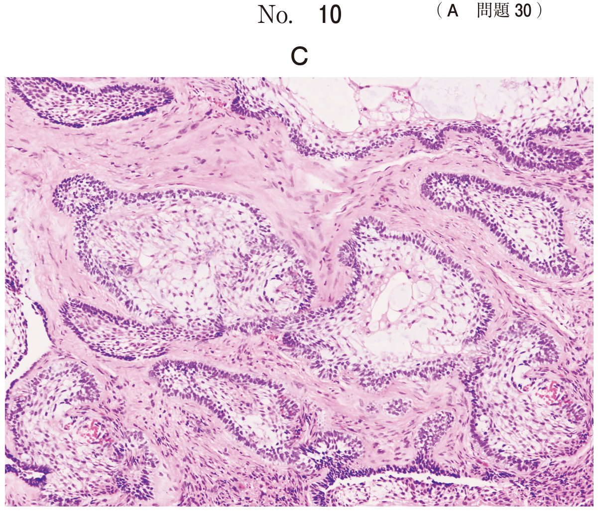
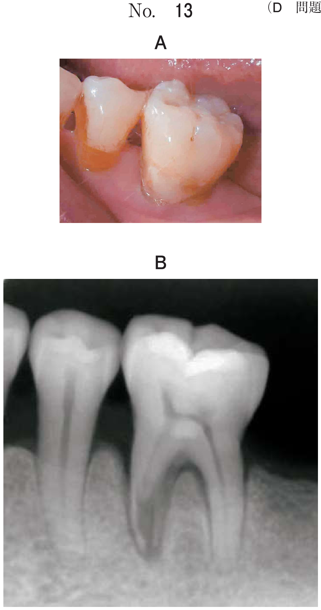
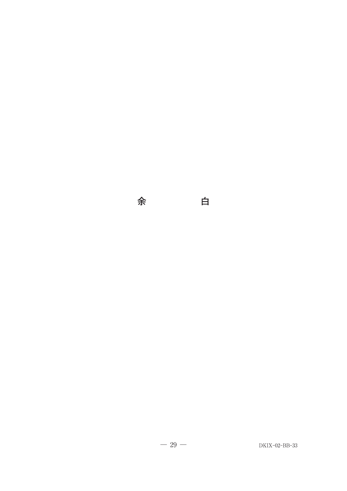
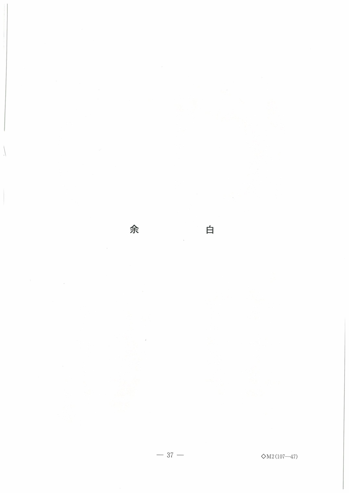

唇顎口蓋裂の治療
治療の手順（タイムライン）
唇顎口蓋裂は成長に応じた段階的治療を行う。
| 時期 | 治療内容 |
|---|---|
| 出生直後 | 初診・哺乳指導・Hotz床の装着 |
| 3〜6か月 体重5〜6kg |
口唇形成術 |
| 1歳〜1歳6か月 体重10kg |
口蓋形成術（一期法） ※鼓膜換気チューブ留置術 |
| 3〜4歳 | 発音検査 |
| 4〜5歳 | 構音訓練開始 |
| 就学前 | 言語治療 |
| 6歳 | 口唇・鼻修正手術 |
| 8〜10歳 犬歯誘導 |
顎裂部二次的骨移植術 |
| 10歳以降 | 口唇・鼻修正手術（適宜） |
| 18歳以降 | 顎変形症手術（必要時） |
※歯科の定期健診・矯正治療・耳鼻科の定期健診（中耳炎）は全期間を通じて行う
Hotz床
役割
- 哺乳の改善（口蓋裂による口腔内圧低下を補う）
- 舌の迷入を防ぐ
- 顎発育の誘導（歯槽形態の改善）
- 嚥下改善
※Hotz床は軟口蓋の挙上や鼻咽腔閉鎖機能の正常化を目的としない（それはスピーチエイドの役割）
顎裂部二次的骨移植術
時期
8〜10歳（犬歯萌出前、犬歯誘導の時期）
骨採取部位
自家海綿骨（腸骨が多い）
目的（最頻出）
- 犬歯の萌出誘導（顎裂部に歯を誘導）
- 鼻口腔瘻の閉鎖（鼻腔漏出の防止）
- 上顎骨の連続性の回復
- 鼻翼基部の挙上（外鼻形態の改善）
- 「犬歯の萌出誘導」＋「鼻口腔瘻の閉鎖」が最頻出の正解パターン
- 中耳炎の予防・上顎洞炎の改善・反対咬合の改善は目的ではない
- 鼻咽腔閉鎖機能の改善は骨移植の目的ではない（咽頭弁形成術の目的）
開鼻声と口蓋裂
開鼻声は鼻咽腔閉鎖機能不全により発生する。口蓋裂を伴う疾患（唇顎口蓋裂・粘膜下口蓋裂）で術後の経過観察時に注意する。
※口唇裂のみ・唇顎裂のみ・横顔裂では口蓋に裂がないため開鼻声は通常生じない
スピーチエイド
口蓋形成術後に鼻咽腔閉鎖機能不全が残存する場合に使用。軟口蓋を挙上し鼻咽腔を狭小化して閉鎖機能を補助する装置。
咽頭弁形成術
スピーチエイドで改善しない鼻咽腔閉鎖機能不全に対して、10歳以降に適宜施行。咽頭後壁の粘膜弁を軟口蓋に移植する。
過去問
生後1日の新生児。全身状態には問題がないという。初診時の口腔内写真（別冊No.14）を別に示す。
哺乳障害に対してまず行うべき処置はどれか。1つ選べ。

b 口唇形成術
c 口蓋形成術
d 胃瘻の造設
e Hotz床の装着
【解説】生後1日の新生児の哺乳障害に対しては、まずHotz床を装着する。口唇形成術は3〜6か月、口蓋形成術は1歳〜1歳6か月が適切な時期であり、出生直後に行うものではない。
生後8日の男児。唇顎口蓋裂の治療を希望して来院した。診断をした結果、ある装置を製作することとした。初診時の顔貌写真（別冊No.15A）、口腔模型の写真（別冊No.15B）及び製作した装置の写真（別冊No.15C）を別に示す。
この装置を用いる目的はどれか。2つ選べ。

b 軟口蓋の挙上
c 呼吸機能の改善
d 歯槽形態の改善
e 鼻咽腔閉鎖機能の正常化
【解説】生後8日→Hotz床。Hotz床の目的は哺乳の改善（a）と歯槽形態の改善＝顎発育誘導（d）。b（軟口蓋の挙上）とe（鼻咽腔閉鎖機能の正常化）はスピーチエイドの目的。c：Hotz床は呼吸機能改善を主目的としない。
8歳の唇顎口蓋裂児において顎裂部二次的骨移植術を行う目的はどれか。2つ選べ。
b 犬歯の萌出誘導
c 上顎洞炎の改善
d 反対咬合の改善
e 鼻口腔瘻の閉鎖
【解説】顎裂部骨移植の目的は犬歯の萌出誘導（b）と鼻口腔瘻の閉鎖（e）。a：中耳炎予防は鼓膜換気チューブ。c：上顎洞炎改善は骨移植の目的ではない。d：反対咬合改善は矯正治療・顎変形症手術の目的。
8歳の男児。左側唇顎口蓋裂で生後すぐに口唇形成術と口蓋形成術を受けた。今回自家骨の移植手術を行うこととなった。術中の写真（別冊No.26）を別に示す。
手術の目的はどれか。2つ選べ。

b 鼻腔を広くする。
c 鼻咽腔を狭くする。
d 上顎骨を連続させる。
e 顎裂部に歯を誘導する。
【解説】8歳＋自家骨移植 → 顎裂部二次的骨移植術。目的は上顎骨の連続性回復（d）と犬歯の萌出誘導（e）。c：鼻咽腔を狭くするのは咽頭弁形成術の目的。
9歳の男児。上顎前歯部の歯列不正を主訴として来院した。左側唇顎口蓋裂に対して口唇形成術と口蓋形成術を受けた既往がある。矯正治療後、顎裂部に手術を行った。術前のエックス線画像（別冊No.18A）と術後のエックス線画像（別冊No.18B）を別に示す。
この手術の目的はどれか。2つ選べ。

b 上顎発育の促進
c 鼻翼基部の挙上
d 鼻咽腔閉鎖機能の改善
e 上顎左側犬歯の萌出誘導
【解説】9歳＋顎裂部の手術 → 顎裂部骨移植術。犬歯の萌出誘導（e）と鼻翼基部の挙上（c）が目的。d：鼻咽腔閉鎖機能の改善は骨移植ではなく咽頭弁形成術の目的。
術後の経過観察時に開鼻声の発現に注意するのはどれか。2つ選べ。
b 唇顎裂
c 横顔裂
d 唇顎口蓋裂
e 粘膜下口蓋裂
【解説】開鼻声は鼻咽腔閉鎖機能不全により発生し、口蓋裂を伴う疾患で注意が必要。唇顎口蓋裂（d）と粘膜下口蓋裂（e）は口蓋に裂があるため、術後に開鼻声の発現に注意する。a（口唇裂）、b（唇顎裂）、c（横顔裂）は口蓋に裂がないため開鼻声は通常生じない。
4歳の男児。定期的な口腔管理を希望して来院した。生後3か月時に口唇閉鎖術、1歳2か月時に口蓋形成術を受けたという。来院時の顔貌写真（別冊No.33A）と口腔内写真（別冊No.33B）を別に示す。
現時点で適切な対応はどれか。2つ選べ。

b 過剰歯の抜去
c 口腔衛生指導
d 上唇小帯切除術
e 上顎左側乳中切歯の抜去
【解説】4歳で口唇・口蓋形成術後。現時点で適切なのは食事指導（a）と口腔衛生指導（c）。定期的な口腔管理として基本的な指導が重要。b・d・eは写真から判断して現時点では不要。
5歳の男児。定期健診のため来院した。唇顎口蓋裂のため生後4か月時に口唇形成術、1歳8か月時に口蓋形成術を行ったという。初診時の口腔内写真（別冊No.38A）と装置の写真（別冊No.38B）とを別に示す。
この装置を使用する目的はどれか。1つ選べ。

b 歯列弓の側方拡大
c 咽頭破裂音の改善
d 鼻咽腔閉鎖不全の改善
e 永久歯萌出スペースの確保
【解説】口蓋形成術後に装着されている装置の写真から、口蓋部の瘻孔（鼻口腔瘻）を閉鎖する装置（閉鎖床）と判断。目的は鼻腔漏出の防止（a）。d：鼻咽腔閉鎖不全の改善はスピーチエイドや咽頭弁形成術。